Setting Up Desktop and Remote Desktop Access
Logging Into Desktop and Desktop Serial Number
When you first try to login to your desktop, your username for the desktop should be the same as your Texas A&M NetID that you use to login to the Texas A&M Howdy Portal. Similarly, the password is also the same as the one you use to login to Howdy portal. Also, the desktop most likely won’t be ready, and you’ll probably receive a message like “The sign-in method you’re trying to use isn’t allowed. Please contact your network administrator,” after trying to login, and you will probably have to contact ECEN IT at:
ecen-helpdesk@tamu.edu
Before emailing ECEN IT for help, also make sure the desktop is connected to ethernet. Then, you can send them an email that looks something like the following:
Hi there,
My name is [Name], and I’ve recently been hired as a Graduate Assistant in the ECEN department. I attempted to log into my assigned desktop computer for the first time today, but received the following error message:
“The sign-in method you’re trying to use isn’t allowed. Please contact your network administrator.”
The computer was already connected to Ethernet, so I believe network connectivity is not the issue. Could you please assist me in resolving this login problem?
Also, my advisor is Professor Adam Birchfield, and the serial number of the desktop is ECEN 3K3J9R3.
Please let me know if you need any additional information from my end.
Thanks,
[Your Name] (UIN [Your UIN Number])
The serial numbers of the desktops can be found on the tag/sticker on the desktops next to “SN”, as show in the red boxes of the following two images:
{kind=link}
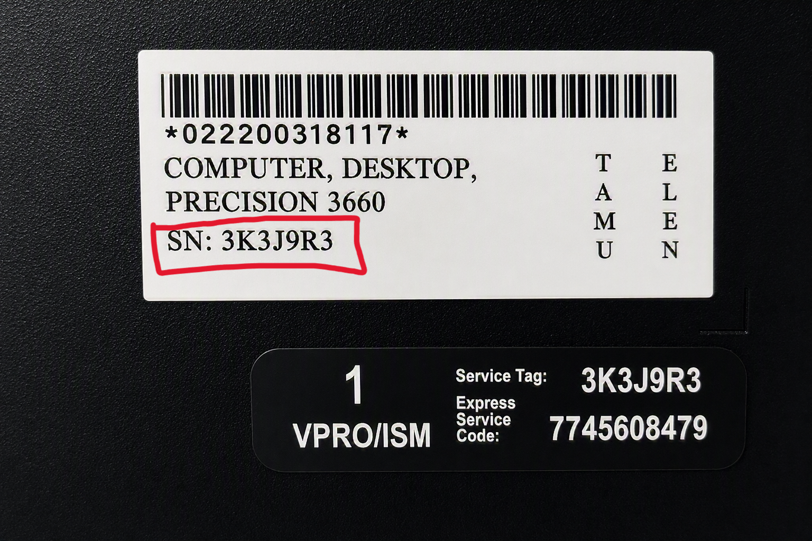
{kind=link}
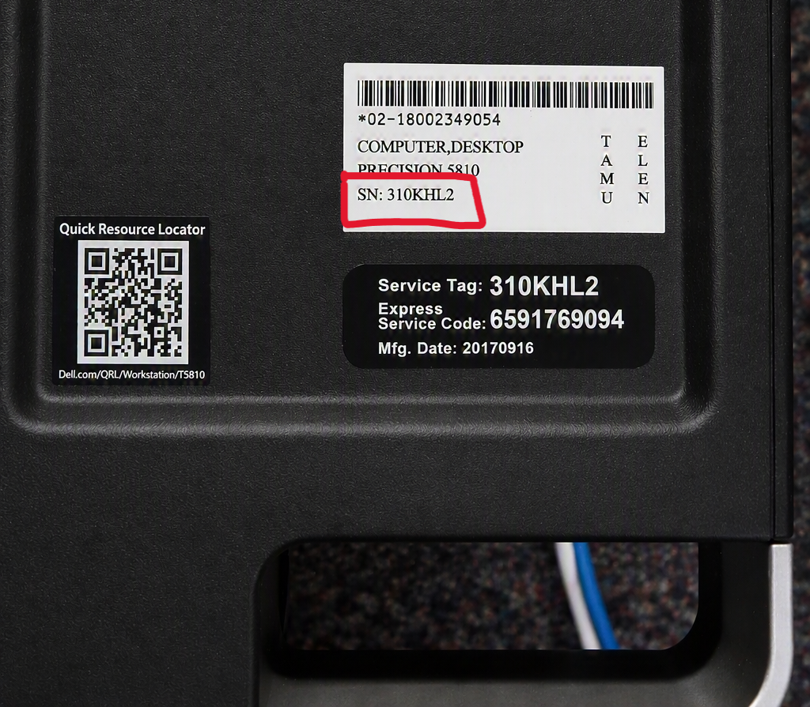
For the top image, the serial number is 3K3J9R3, and for the bottom image, the serial number of the desktop is 310KHL2.
Once you send the desktop to ECEN IT, they may ask you to bring the desktop to their office in WEB 054 on the bottom floor of the Wisenbaker Engineering Building.
Remote Desktop Access
To access your ECEN desktop in your office remotely, you will need to setup and download VPN, and configure the remote desktop app.
Setting Up VPN
Before accessing your desktop remotely (from a laptop or personal desktop), you must set up your Texas A&M VPN if you are accessing the desktop off campus (if you are on campus internet, you won’t need to use VPN to access your desktop remotely).
First, go to the Texas A&M VPN Installation Instructions and follow the instructions to donwload and Cisco Secure Client. When you enter your NetID when going to connect.tamu.edu, make sure to enter the NetID WITHOUT the “@tamu.edu”. For instance, if my “full” NetID is “joshua_x@tamu.edu”, I will just enter “joshua_x” for my NetID, as seen below:
{kind=link}
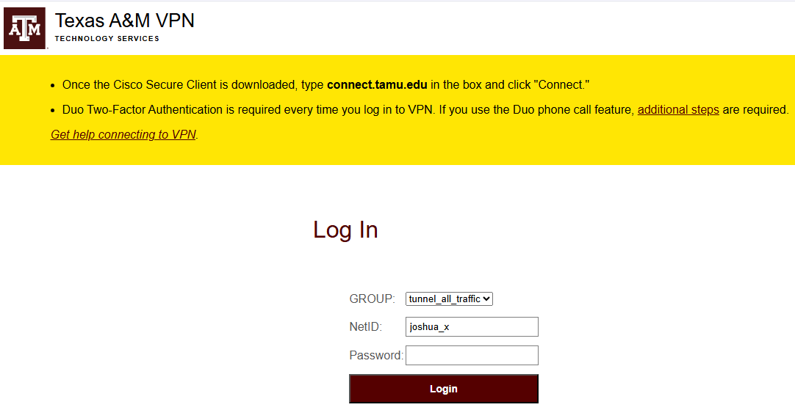
After you enter your password on this webpage (same password to login to Howdy), and click Login, a silent notification will be sent to your Duo Mobile (probably your smartphone) that you must approve. It should look something like the following:
{kind=link}
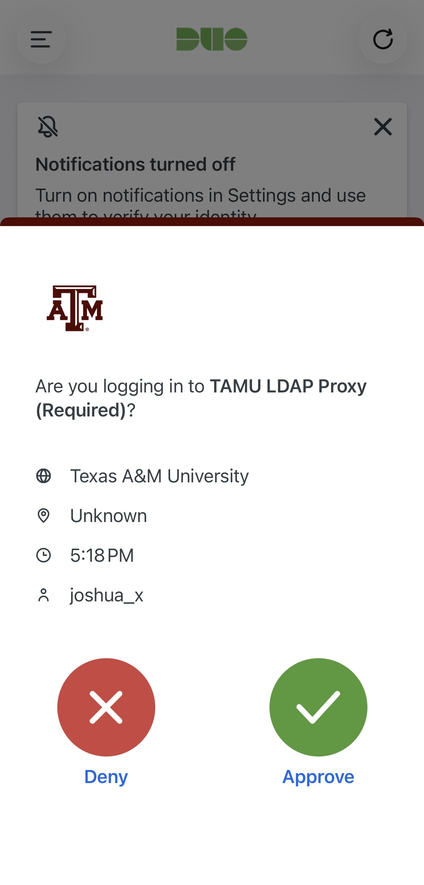
Click Approve, and you should be taken to the webpage where you download Cisco Secure Client. Once the app is downloaded, follow the rest of the instructions on the Installation Webpage to learn how to turn the VPN on by basically enteingr TAMU NetID credentials, and approving the silent DuoMobile push notification.
Configuring Remote Desktop App
The steps to configure the remote desktop app will depend on the operating system of the remote device used. For example, Windows vs Mac operating systems,
Windows
For windows machines, search “Remote Desktop Connection” in the search bar, and open up the app, which should look somewhat like the following:
{kind=link}
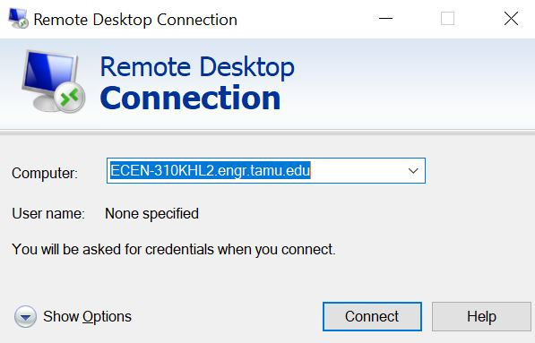
In the space where it asks for “Computer”, enter “ECEN Serial Number.engr.tamu.edu”, as shown above, where the serial number was 310KHL2.
Note
You can also remotely connect to your desktop using its IP address. However, the IP address may change over time. If this happens, any saved Remote Desktop connection that uses the old IP address will stop working, and you will have to physically logon to the desktop to determine its new IP address before reconnecting.
To avoid this issue, it is STRONGLY recommended to use the desktop’s serial number/hostname/computer name instead of its IP address. The hostname typically remains the same even if the IP address changes, allowing you to continue connecting without having to update your Remote Desktop settings.
If you are unsure of the serial number, you can just type in “About Your PC” in the Windows search bar, and the serial number will be found under “Device specifications” next to “Device name”.
After clicking “Connect”, a window should appear asking for your credentials, and should look something like this.
{kind=link}
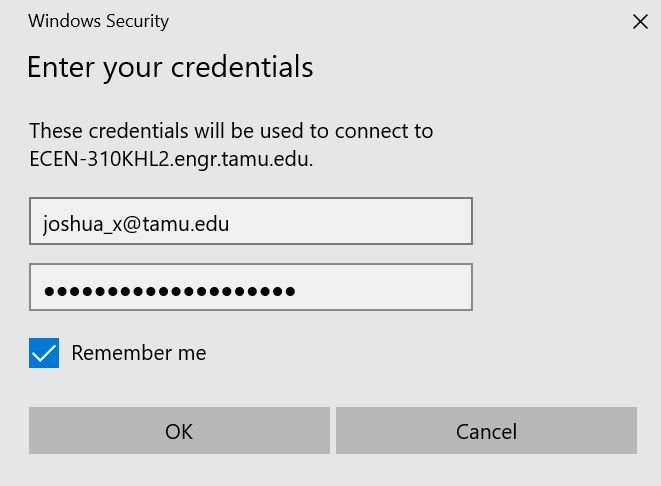
Enter your NetID and password, click “Remember Me”, then click ok. Afterwards, you might get a security popup like the following:
{kind=link}
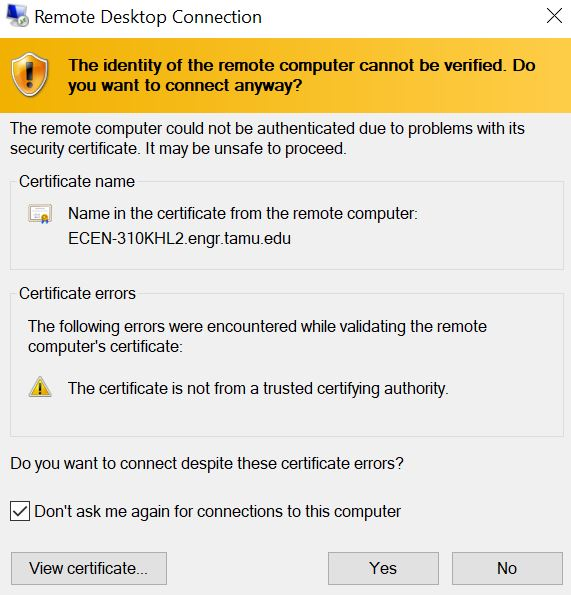
Click “Don’t ask me again for connections to this computer, and then click “Yes”, and you should be able to access the desktop remotely!
Mac
Unlike Windows computers, to access your desktop remotely, Mac devices must first install an app. Go to the App Store and search “Windows App”, and download the app that looks like the following:
{kind=link}
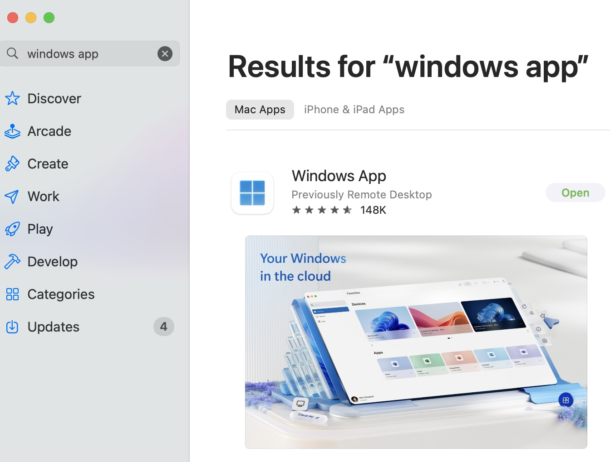
After connecting to VPN, open the remote destop app, and get to the page that looks somewhat like this:
{kind=link}
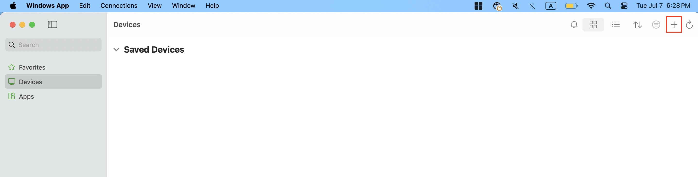
Then, click the plus sign in the upper right, boxed in red as shown above.
Next, click “Add PC”, and a window like the following will pop up:
{kind=link}
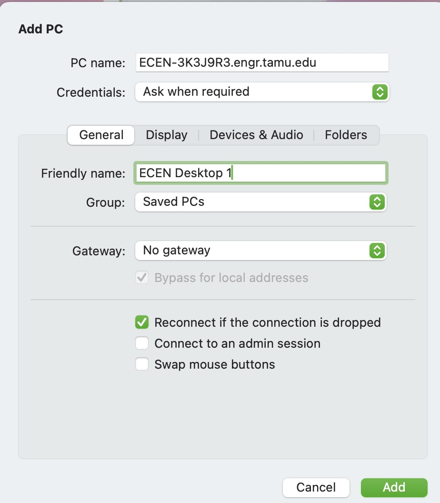
Next to “PC Name”, enter “ECEN Serial Number.engr.tamu.edu”, as shown above, where the serial number was 3K3J9R3. Under “Friendly Name”, enter a name that you can remember. In the image below, we called it “ECEN Desktop 1”.
Note
You can also remotely connect to your desktop using its IP address. However, the IP address may change over time. If this happens, any saved Remote Desktop connection that uses the old IP address will stop working, and you will have to physically logon to the desktop to determine its new IP address before reconnecting.
To avoid this issue, it is STRONGLY recommended to use the desktop’s serial number/hostname/computer name instead of its IP address. The hostname typically remains the same even if the IP address changes, allowing you to continue connecting without having to update your Remote Desktop settings.
Then, under credentials, click “Add Credentials” and enter your NetID and password, as shown below. You don’t have to enter anything for friendly name.
{kind=link}
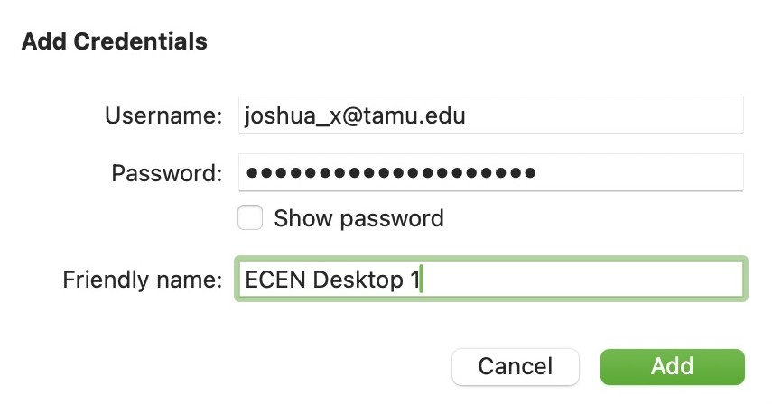
Then, your “Saved Devices” area should look something like the following:
{kind=link}
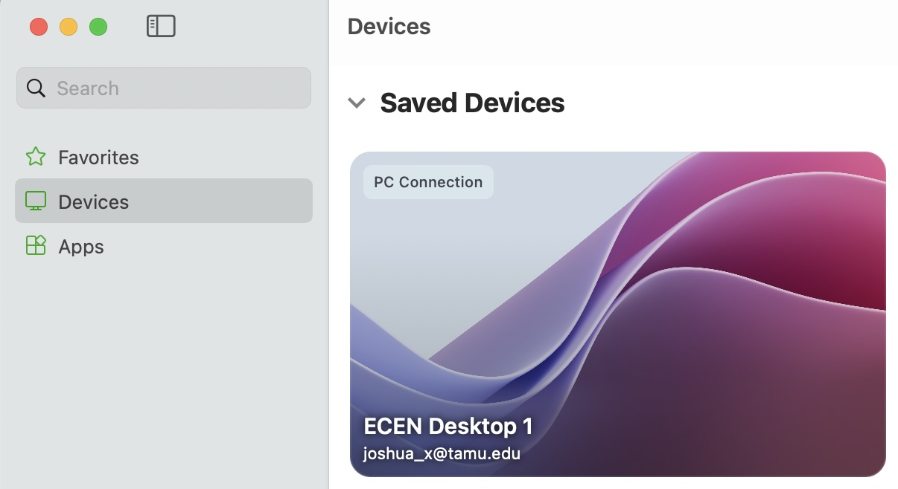
Double Click this new PC connection, and a pop like the one below should appear:
{kind=link}
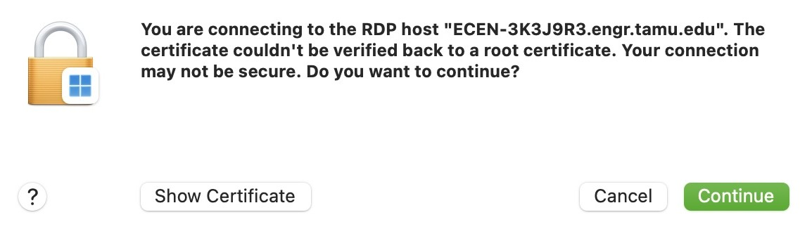
Click “Continue”, and you should be able to access your desktop from your Mac remotely!
Note
You can get VPN and the remote desktop app downloaded on your iPhone, iPad, or android device. The process is almost identical to this one. This way, you can access your desktop remotely from your phone or tablet! すごいね!